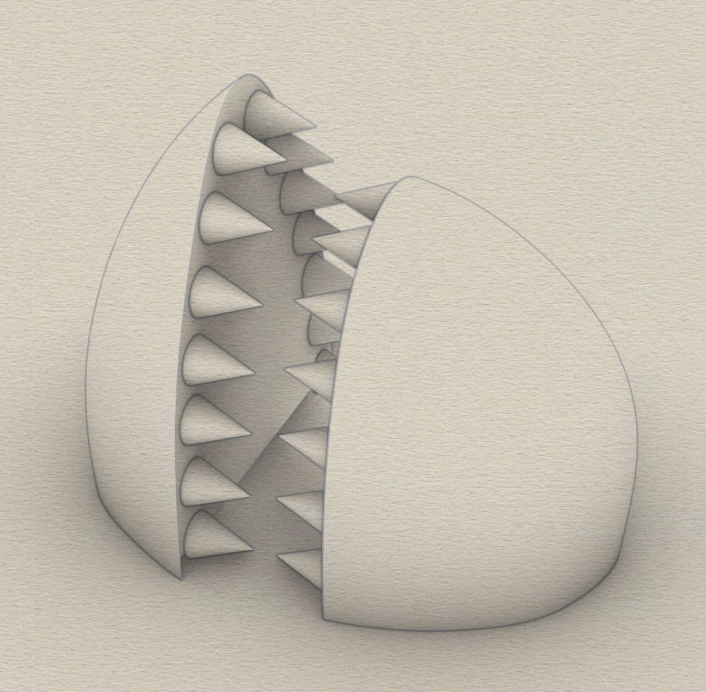
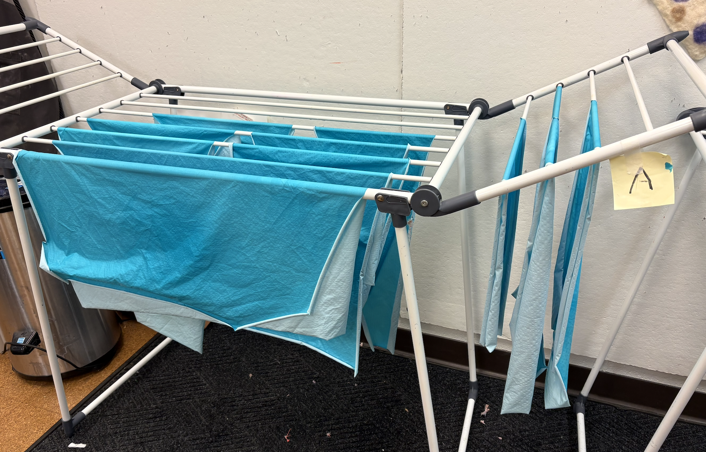
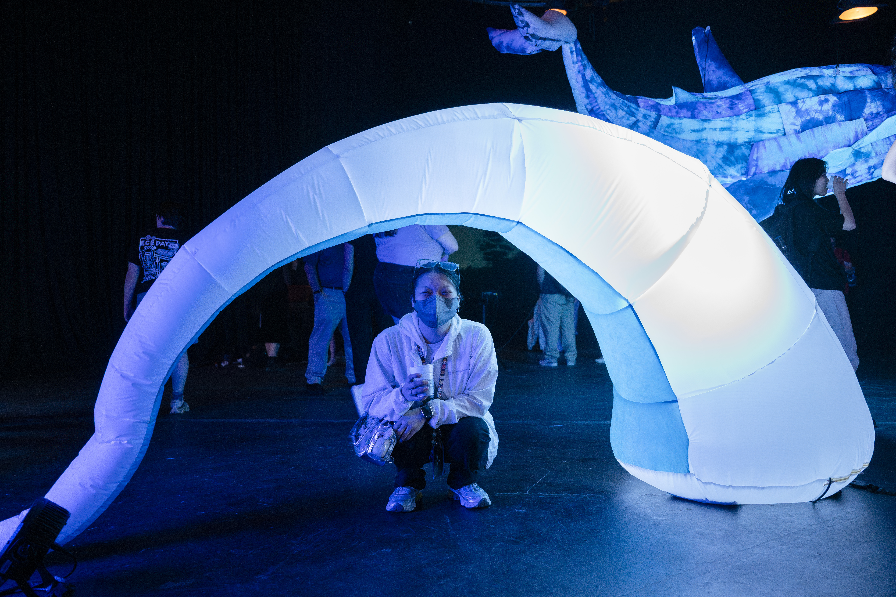
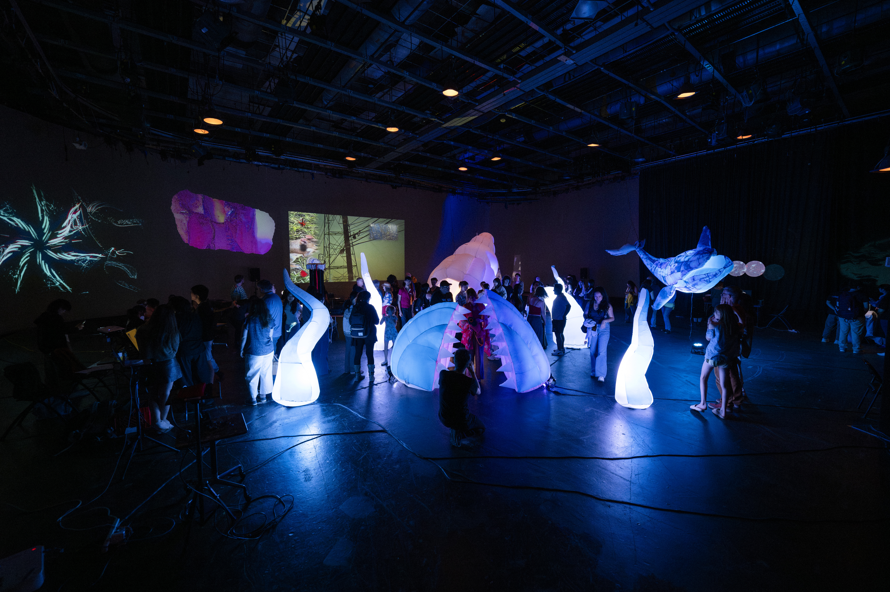
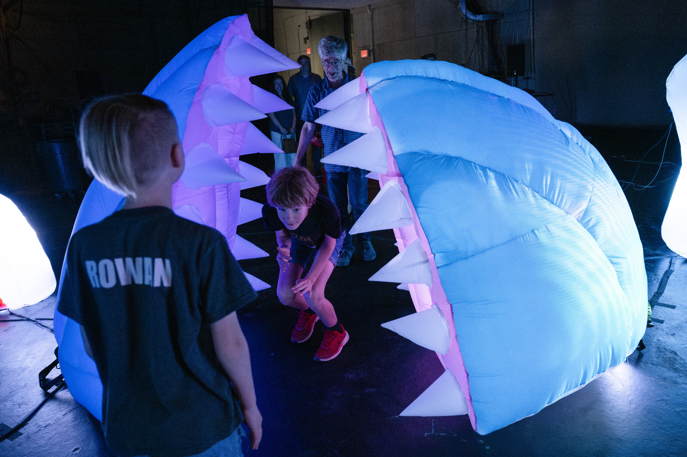
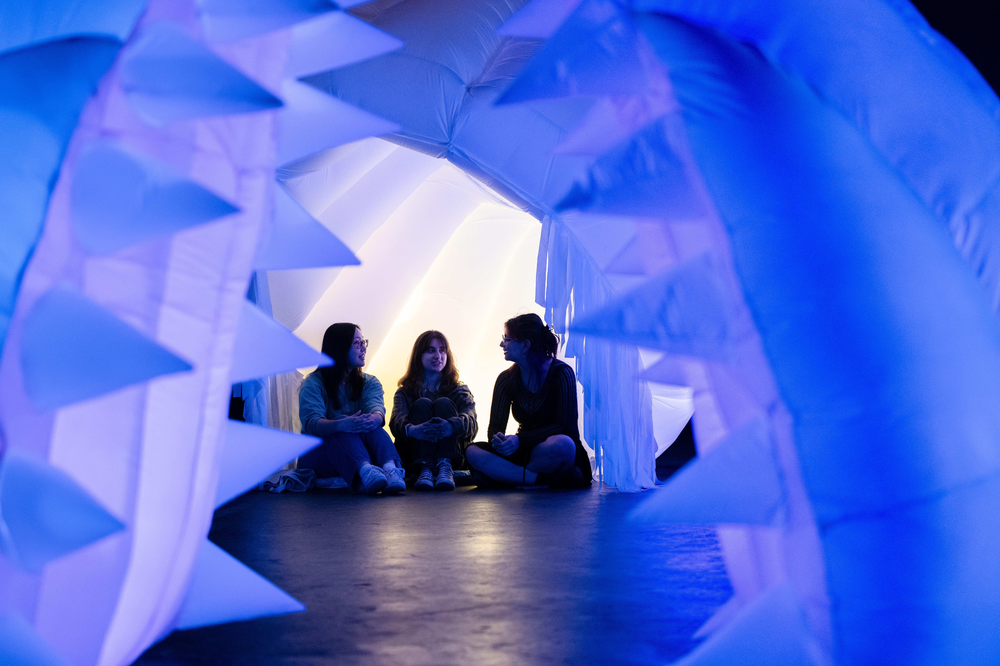
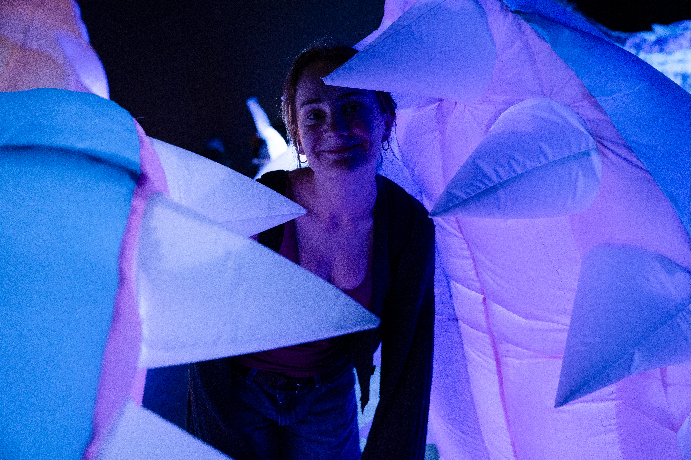

Sea Monster explored how a few inflatable fragments could make an entire room feel occupied by one enormous, unseen creature. We treated the floor of WQED Studio A as the surface of the sea. An open mouth became a passage, and illuminated tentacles emerged elsewhere to suggest the body hidden below.
We planned the work collectively across concept development, engineering, fabrication, and sewing. Once installed, however, the creature no longer belonged only to its makers. Visitors stepped between its teeth, posed inside its mouth, and turned a carefully fabricated student project into a public stage for play.
Designing an Unseen Body
Our early conversations considered several directions, and the sea monster stood out because it offered a spatial idea with room to grow. It could occupy the entire studio through a few visible fragments and use the room itself to establish the creature's scale.
We showed only enough of the creature for visitors to imagine the rest. The floor marked the surface between its visible fragments and the body hidden below. Its open mouth invited people in, and the tentacles carried the creature's presence into the rest of the room.
The creature was never only the fabric we built. Studio A became its ocean, and the unseen space beneath the floor became its body.


From Surface to Volume
Our five-person team worked through a deliberately shared process. We developed the concept together and moved fluidly between engineering, fabrication, and sewing. Within that structure, I modeled all of the tentacles, dyed the blue and pink fabric for the head, joined the team in sewing, and later worked throughout the installation with our faculty advisor, Olivia Robinson.
The head and tentacles began as digital surfaces before being unwrapped into flat panels, cut from ripstop nylon, sewn, and inflated back into volume. Precise seams allowed the fabric to recover the modeled curves and helped the separate pieces read as parts of the same body.




Color, Light, and Fabrication
The ripstop nylon began white, so color had to be built into the visible surfaces before assembly. I dyed the fabric for the blue exterior of the head and the pink interior of the mouth. The internal baffles and teeth remained white. The dyed color needed to work both as a surface in daylight and as a translucent membrane under theatrical lighting.
Fabrication moved between small dye recipes, large sheets of material, and repeated panel layouts. These quiet steps shaped how the creature held light, where its seams remained visible, and how faithfully each digital curve returned once air replaced the modeling grid.




Preparing for Uncertainty
Soft fabrication carries a degree of uncertainty, so we built several safeguards into the design. Internal baffles helped the head preserve its intended volume and kept its two sides from expanding into undefined forms. We were also prepared to complete fewer tentacles if fabrication took longer than expected.
The nearly horizontal tentacle raised a different concern. We were unsure whether a single base could support its reach, so we kept the overhead structure available as a backup suspension point. In the end, every tentacle was completed and the horizontal form held itself without additional support. Continuous air pressure, the sewn skin, and the curve of the form worked together with a structural confidence that felt almost magical.
During installation, we added zippers to make the tentacles easier to access and placed stage lights inside them, turning their fabric skins into glowing volumes. Working throughout the installation with Olivia Robinson, I helped tune the mouth, tentacles, lighting, cables, and visitor paths within a studio shared by many other projects.


Final Installation
In the final arrangement, the mouth acted as both the recognizable face of the creature and a passage through it. Illuminated tentacles marked the reach of a much larger body, while the dark room allowed separate inflatable pieces to merge into one atmosphere. Neighboring work, available light, circulation, and the bodies expected to enter all shaped the final spatial composition.




Permission to Play
As an architecture student, I was accustomed to people observing models carefully and rarely touching them. I expected visitors to approach Sea Monster with a similar sense of caution. Instead, they immediately walked into the mouth, looked through the teeth, and posed as if they were being swallowed.
Its polished, highly legible appearance may have made it feel closer to a public attraction than a fragile student artifact. That familiarity communicated something valuable without instructions. The creature felt safe to enter and ready for the body. Visitors moved beyond simply completing the installation through movement and gave themselves permission to perform with it.



Reflection & Acknowledgment
Sea Monster changed my understanding of where uncertainty can enter a project. We expected unpredictability from the soft material, yet the fabricated forms reproduced our digital models with surprising precision. The more consequential uncertainty arrived after installation, when the work entered public life and visitors used it more freely than I had imagined.
The project taught me that an immersive environment does not require a complete world. Carefully chosen fragments can be enough, and a soft structure can invite forms of trust and participation that a rigid architectural model rarely receives. Its success was not that visitors treated the object carefully, but that the object made careful distance feel unnecessary.
We are deeply grateful to our faculty advisor, Olivia Robinson, whose teaching, material knowledge, and sustained presence throughout installation helped us carry an ambitious collective idea into the room with confidence and care.